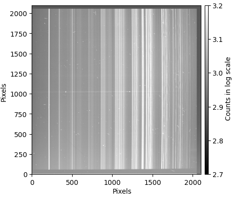

Data Cleaning¶
The acquisition of photometric and spectroscopic data in astronomy is affected by various sources of noise. The major ones are:
Sensor Bias – An electronic offset introduced by the detector. This is the image obtained when taking a zero-second exposure with the shutter closed. To correct for this, the bias must be subtracted from the data.
Dark Current – Thermal noise present in non-refrigerated cameras. This image is obtained in exposures taken with the shutter closed for the same duration as the target observation. To remove this noise, the dark frame must be subtracted from the data.
Flat-Field Variations – Pixel-to-pixel sensitivity differences in the light sensor. These variations can be measured by taking a short exposure (typically less than ten seconds) of a uniformly illuminated white screen inside the telescope dome (or using a sky-flat). After subtracting bias and dark frames, the 2D spectrum must be divided by the flat-field to correct for these inhomogeneities.
Cosmic-Ray Strikes – Longer exposures accumulate more cosmic-ray hits. If multiple exposures of the same target are available, cosmic rays can be removed by taking the median of all exposures (avoid using the average). If only a few exposures are available, specialized algorithms can detect and remove cosmic rays by identifying their sharp edges.
A raw 2D spectrum with the dispersion axis aligned horizontally and affected by cosmic-ray strikes appears as follows:
{kind=link}

In the easyspec cleaning tutorial, we show how to clean a raw astronomical image. For the detaild documentation on the cleaning() class, we refer the reader to the specitic cleaning documentation.
Note
The cleaning() class of easyspec can also be used to clean photometric data.